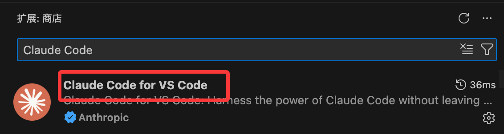
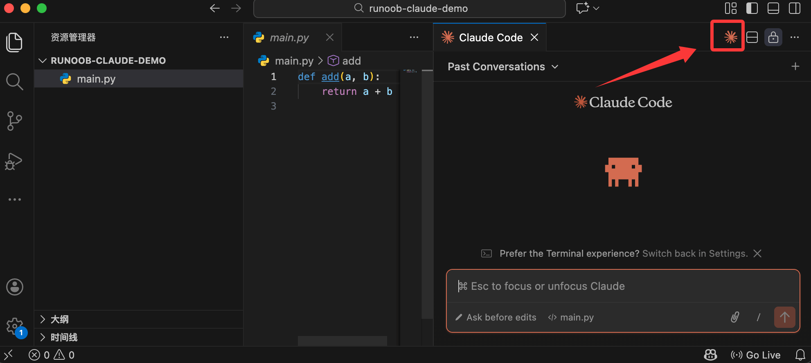

Primer uso de Claude Code
Una vez instalado Claude Code y configurada la API, podemos empezar a usarlo.
A continuación, usaremos un proyecto de ejemplo muy sencillo para completar el primer uso.
Crea un proyecto de ejemplo:
mkdir runoob-claude-demo cd runoob-claude-demo
Crea un archivo simple:
touch main.py
Escribe el siguiente contenido:
def add(a, b):
return a + b
Haz que Claude Code explique el código
Ejecuta en el directorio del proyecto:
claude
Luego introduce:
解释 main.py 这个文件在做什么，用新手能理解的方式说明
Claude leerá el código del directorio actual y dará una explicación.

Haz que Claude Code te ayude a modificar el código
Continúa escribiendo en la sesión de Claude:
Agrega anotaciones de tipo a esta función y añade manejo de errores básico.
Claude dará sugerencias de modificación, que normalmente incluyen:
- El código modificado
- Explicación del motivo del cambio
Puedes elegir:
- Aplicar directamente
- Ajustar manualmente
- Rechazar la modificación

Formas básicas de interacción con Claude Code
Tipos de instrucciones comunes
Puedes dividir las instrucciones para Claude Code en tres categorías:
1. Explicativas
Explica este código. ¿Por qué está escrita esta función de esta manera?
2. De modificación
Ayúdame a refactorizar esta función. Divídela en varias funciones pequeñas.
3. De generación
Agrega un caso de prueba. Agrega salida de logs.
Una plantilla de instrucción simple pero útil:
在不改变现有行为的前提下， 帮我优化 XXX 文件的可读性， 并说明你做了哪些修改。
Preguntas frecuentes: reparar permisos de directorio
Si usas Mac o Linux, presta atención a si tienes permiso para ejecutar. Si aparece un error similar al siguiente, es que no tienes permisos suficientes:
Error: EACCES: permission denied, open
Abre la terminal y ejecuta el siguiente comando:
# 1. 修复 .claude 目录的所有权 sudo chown -R $(whoami) ~/.claude # 2. 修复目录权限（给予读写执行权限） chmod -R 755 ~/.claude # 3. 确保 projects 目录可写 chmod -R 755 ~/.claude/projects
Verifica la reparación:
# 检查权限 ls -la ~/.claude/
Usar Claude Code en VS Code
Si no te gusta usar el modo de línea de comandos de Claude Code, podemos instalar Claude Code en el editor VS Code.
Abre VS Code, ve al mercado de extensiones y buscaClaude CodeInstalar:

Una vez completada la instalación, haz clic en el icono de Claude Code en la esquina superior derecha para acceder a la página de Claude Code:

A continuación, puedes usarlo en el cuadro de diálogo: